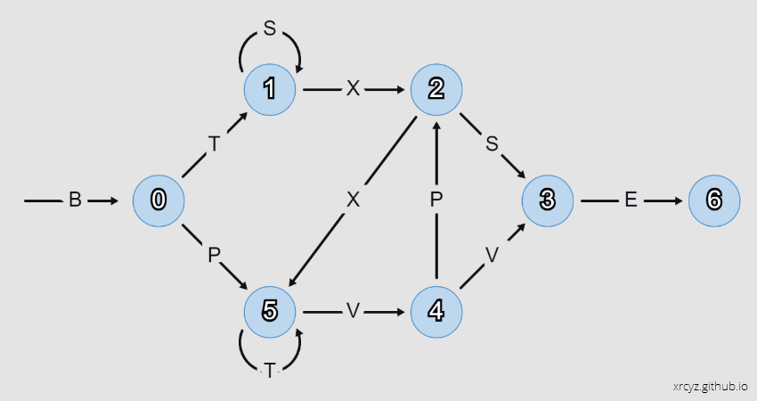

Toy LSTM in p5js
I made a toy LSTM to help me understand the concepts underlying Long-Short Term Memory recurrent neural networks. It solves a simple task - given a string of characters, predict the next character according to the Reber Grammar.

The interesting part of this project is that I derived the weights by hand, without using back-propagation, to see if I could gain an insight into how an LSTM makes its predictions.
If you want to follow along in the animation, you can do it here.
The internal logic of this LSTM is remarkably simple (compared to what I was expecting, at least). You could implement it in Microsoft Excel.
Input
The input array is a one-hot vector representing the last character of the string. At time zero, we initialise this to the letter B.
let input = [1,0,0,0,0,0,0]; //current token [B,T,S,X,P,V,E]Hidden State
Throughout this section I will use to
node[i]to refer to the index of the current node in the Reber Grammar graph.
Memory State
The memory array is a one-hot vector representing the state of the Reber Grammar (the index of the current node in the graph).
let memory = [0,0,0,0,0,0]; //current node in the graph: [0,1,2,3,4,5]Memory Updates
The eraser, writer, and filter arrays are responsible for updating the memory vector. This is equivalent to crossing an edge in the graph and moving to a new state.
let eraser = [0,0,0,0,0,0]; //what to erase in memory
let writer = [0,0,0,0,0,0]; //what to write to memory
let filter = [1,1,1,1,1,1]; //filter the writer when it returns multiple write valuesWhenever the LSTM receives a new input, the eraser, writer, and filter perform a test on each node to see if its preconditions have been met. For example, here is the test for node[0]:
eraser[0] = 0; //always reset
writer[0] = Math.tanh(5 * B); //if we get a B, then 100% we arrived at node 0
filter[0] = 1; //never filterFrom there we might move to node[1]. This node is interesting for two reasons:
- We don’t want to erase the memory if the graph loops on
S. - We don’t want to increment the memory if the graph loops on
Tatnode[5].
This is where the eraser and filter tests come into play:
eraser[1] = 1 / (1 + exp(-10 * (0.5 - X))); //reset on X (exit node 1)
writer[1] = Math.tanh(5 * T); //if we get a T, then ring the bell for node[1]
filter[1] = 1 / (1 + exp(-30 * (0.75 - memory[5]))); //but only if we are not on node 5Note that I am taking moderate care to ensure that the firing threshold for each node in memory is approximately 1.0. This becomes important in the reader layer, when we need to test multiple nodes to predict a single character. A node may accumulate evidence when precedent edges are crossed, but is not considered ‘active’ until it crosses the firing threshold.
With that in mind, let us now consider node[2], which may be reached by T(SSS)X or X(TTT)VP. In the writer I use a factor of 0.55 to increment the memory by half if a precedent edge T, X, or P is crossed. This covers the cases for TX (via node 1) and XP (via node 5). Finally, the filter is set to ignore T when it loops on node[5].
eraser[2] = 1 / (1 + exp(-30 * (0.65 - memory[2]))); //reset on exit
writer[2] = Math.tanh(0.55 * (T + X + P)); //breadcrumbs to node 2
filter[2] = 1 / (1 + exp(-30 * (0.65 - memory[5]))); //do not increment from node 5With node[3], I apply weights to S and V to catch the precedent sequences S and VV. The eraser resets on P to avoid sequence VPS, and the filter blocks the looping S on node[1] to avoid sequence SSS.
eraser[3] = 1 / (1 + exp(-10 * (0.5 - P))); //reset on P
writer[3] = Math.tanh(3.0 * S + 0.55 * V); //breadcrumbs to node 3
filter[3] = 1 / (1 + exp(-10 * (0.7 - memory[1]))); //do not increment from node 1 node[4] presents a refreshingly simple case, where we can increment on V and immediately erase/filter on exit.
eraser[4] = 1 / (1 + exp(-10 * (0.6 - memory[4]))); //reset on exit
writer[4] = Math.tanh(5 * V); //breadcrumbs to node 4
filter[4] = 1 / (1 + exp(-10 * (0.6 - memory[4]))); //filter V on exit node[5] filters inputs from node[1], allowing it to trigger on sequences BP and X. The eraser resets the state on exiting across edge V.
eraser[5] = 1 / (1 + exp(-10 * (0.5 - S - V))); //reset on S,V
writer[5] = Math.tanh(0.55 * B + 0.7 * P + 5 * X); //breadcrumbs to node 5
filter[5] = 1 / (1 + exp(-30 * (0.65 - memory[1]))); //do not increment from node 1Finally, we update the memory. This is usually represented as a matrix operation.
for(let i = 0; i < memory.length; i++)
{
memory[i] = memory[i] * eraser[i] + writer[i] * filter[i];
}Readout
The reader layer outputs a one-hot vector representing the probability of yielding a specified character. Each element of the reader performs a test of the memory vector, to determine if the current state could yield a given character.
reader[0] = 0; //we never yield B
reader[1] = Math.tanh(5 * (memory[0] + memory[5] - 0.7)); //T may yield from 0 or 5
reader[2] = Math.tanh(5 * (memory[1] + memory[2] - 0.7)); //S may yield from 1 or 2
reader[3] = Math.tanh(5 * (memory[1] + memory[2] - 0.7)); //X may yield from 1 or 2
reader[4] = Math.tanh(5 * (memory[0] + memory[4] - 0.7)); //P may yield from 0 or 4
reader[5] = Math.tanh(5 * (memory[4] + memory[5] - 0.7)); //V may yield from 4 or 5
reader[6] = Math.tanh(5 * (memory[3] - 0.7)); //E may yield from 3As mentioned earlier, the choice of weightings in the eraser, writer, and filter come into play when we start adding nodes in the reader. If there is a chance that two nodes are both partially activated, we want their sum to be less than the value of a single fully activated node.
Discussion
This LSTM has some interesting features/flaws that are worthy of discussion.
- The internal logic assumes that sequences always start with
B. - Long loops on
Tfromnode[5]cause false positives onnode[1]. - The program running on the LSTM is frustratingly obfuscated.
- Snapping to vertices may prevent drift in long sequences and help normalize inputs.
Initialising State
I find it interesting to consider that real-world data will start with the system is some unknown hidden state. The LSTM should be robust enough to recover from uncertainty when there are multiple activated nodes in memory, or when presented with an invalid input-memory pair.
Long Loops
When the system loops on T from node[5], a false positive is generated in writer[1]. This gets filtered by filter[1], but the filter returns a slightly positive value - so with enough loops, node[1] will achieve false activation.
This is an interesting error that I can see it popping up in real-world applications. Improbable sequences are less likely to be represented in the training data, and so errors on said sequences are less likely to be caught and corrected during training.
Obfuscation
There were multiple times while writing this blog post that I thought, ‘neural nets would make a great obfuscation tool’.
It has me thinking, maybe instead of training for predictions, I should be training a model to output the parameters of a finite state machine. Then at least it might be possible to reverse engineer the program without having to read off the weights.
Snapping to vertices
Consider the following:
- A one-hot vector is equivalent to a vertex on a hypercube.
- A loop of state changes is equivalent to walking the vertices of a hyperpolygon in memory space.
Critically, we don’t want the memory drifting in weird orbits if we go into a long loop (cycling PXV for example). We want to snap to the vertices of the hyperpolygon so that the reader correctly classifies the hidden state. With this in mind, I can see why it may make sense to preprocess the inputs into one-hot or binary vectors, to limit the range of outputs on the eraser, writer, and filter. There might even be a case for doubling the memory size and rounding the memory elements after every state change (one slot per breadcrumb).
Future Work
For the sake of completeness I should compare this solution to a trained LSTM and discuss the differences. TBA.